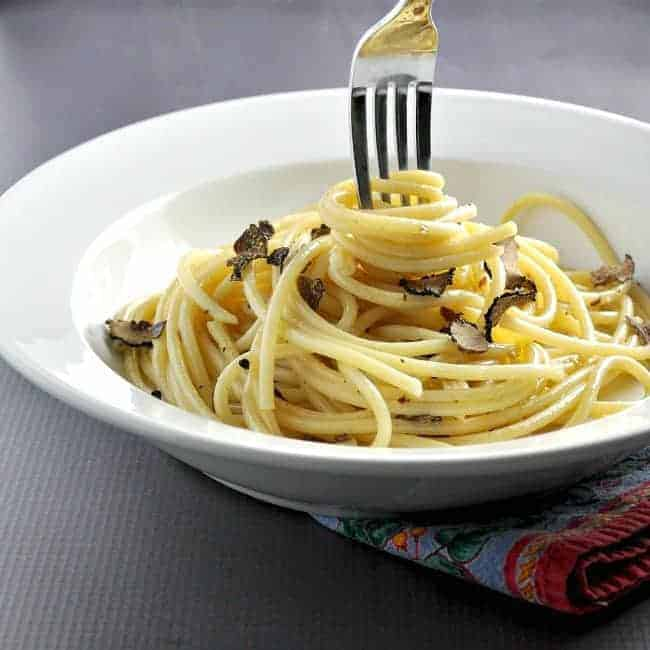

Bucatini Black Truffle

Description
Because truffles can be expensive in the United States, you may want to use minced portobello mushroom in place of the truffles and then truffle paste, truffle oil or truffle butter to enhance the earthy flavor of the dish.
Ingredients
- 1 pound dried bucatini
- 4 anchovy fillets
- 2 cloves garlic
- pinch of salt
- ¼ cup extra virgin olive oil
- 1 black truffle
Steps
- Cook bucatini according to package directions. Drain, reserving 1 cup pasta cooking water.
- Combine anchovy, garlic and salt in a small bowl. Use the back of a spoon to mash mixture into a paste.
- Meanwhile, heat olive oil, and anchovy mixture over very low heat. Cook and stir 1 to 2 minutes, until paste melts into the oil, taking care not to brown the garlic. Add grated or sliced truffle; cook and stir 15 seconds. Add drained, cooked pasta to pan and stir. If mixture is dry, add ¼ cup reserved pasta water; gently toss to combine. Increase heat to medium; cook and stir until heated through, adding more pasta cooking water and/or olive oil as desired.
- Season to taste with salt and freshly ground black pepper and serve.